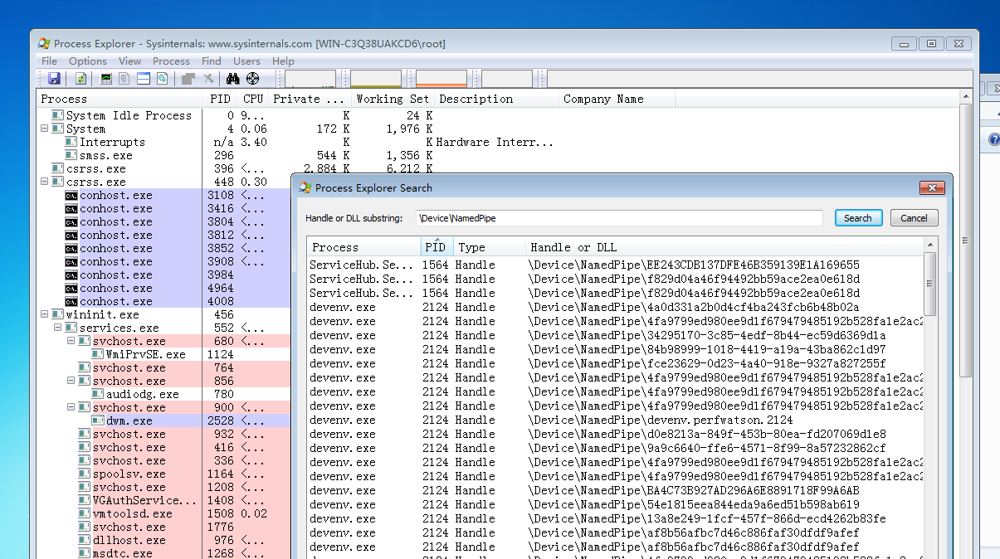
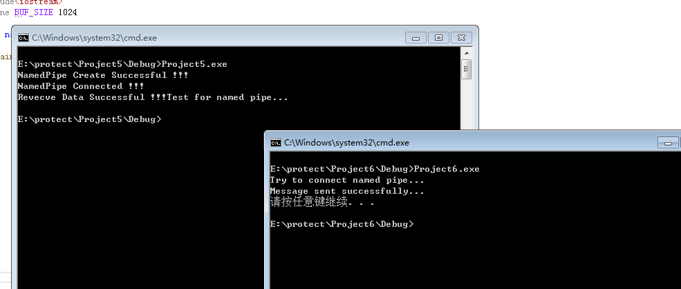
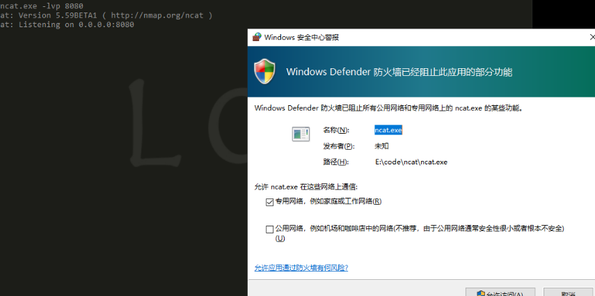
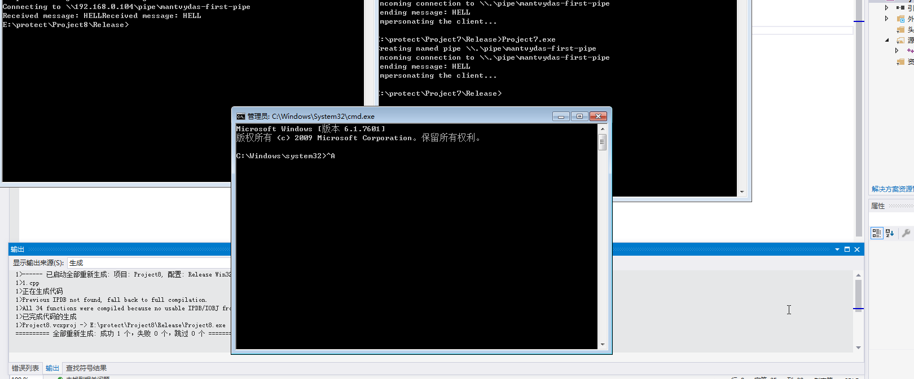

“不知道从什么时候开始，在每一个东西上面都有个日子，秋刀鱼会过期，肉酱也会过期，连保鲜纸都会过期。我开始怀疑，在这个世界上，还有什么东西是不会过期的？”
－－ 《重庆森林》
上操作系统课，记录自己对于命名管道的学习。
关于命名管道：
“命名管道”又名“命名管线”（Named Pipes），是一种简单的进程间通信（IPC）机制，Microsoft Windows大都提供了对它的支持（但不包括Windows CE）。命名管道可在同一台计算机的不同进程之间或在跨越一个网络的不同计算机的不同进程之间，支持可靠的、单向或双向的数据通信。推荐用命名管道作为进程通信方案的一项重要的原因是它们充分利用了Windows内建的安全特性（ACL等）。
用命名管道来设计跨计算机应用程序实际非常简单，并不需要事先深入掌握底层网络传送协议（如TCP、UDP、IP、IPX）的知识。这是由于命名管道利用了微软网络提供者（MSNP）重定向器通过同一个网络在各进程间建立通信，这样一来，应用程序便不必关心网络协议的细节。
命名管道是一个具有名称，可以单向或双面在一个服务器和一个或多个客户端之间进行通讯的管道。命名管道的所有实例拥有相同的名称，但是每个实例都有其自己的缓冲区和句柄，用来为不同客户端通许提供独立的管道。使用实例可使多个管道客户端同时使用相同的命名管道。
- 命名管道的名称在本系统中是唯一的。
- 命名管道可以被任意符合权限要求的进程访问。
- 命名管道只能在本地创建。
- 命名管道的客户端可以是本地进程（本地访问：.\pipe\PipeName）或者是远程进程（访问远程：\ServerName\pipe\PipeName）。
- 命名管道使用比匿名管道灵活，服务端、客户端可以是任意进程，匿名管道一般情况下用于父子进程通讯。
列出计算机内所有的命名管道：
在powershell3以上的版本中，我们可以使用
1 | [System.IO.Directory]::GetFiles("\\.\\pipe\\") |
来查看本机上所有的存在的命名管道，或者使用process explorer来进行查看

命名管道的创建及通信
在windows中命名管道的通信方式是：
①创建命名管道 －－> ②连接命名管道 －－> ③读写命名管道
详细过程如下：
命名管道通过调用函数CreateNamedPipe()创建，函数原型如下：
1 | HANDLE WINAPI CreateNamedPipe( |
详细参数可以参考：https://docs.microsoft.com/en-us/windows/win32/api/winbase/nf-winbase-createnamedpipea
创建完成后服务端可以调用函数ConnectNamedPipe()等待客户端的连接请求，函数原型如下：
1 | BOOL WINAPI ConnectNamedPipe( |
详细参数可以参考：https://docs.microsoft.com/en-us/windows/win32/api/namedpipeapi/nf-namedpipeapi-connectnamedpipe
对于客户端而言，在连接服务器创建的命名管道前需要判断该命名管道是否可用，可调用函数WaitNamedPipe()实现
函数原型如下：
1 | BOOL WaitNamedPipeA( |
详细参数可以参考：https://docs.microsoft.com/en-us/windows/win32/api/winbase/nf-winbase-waitnamedpipea
当WaitNamedPipe()调用成功后，便可使用CreateFile()将命名管道打开已获得管道的句柄。
然后客户端对命名管道的读写操作利用函数ReadFile()和WriteFile()完成，函数原型如下：
1 | BOOL WriteFile( |
1 | BOOL ReadFile( |
具体参数可以参考：
https://docs.microsoft.com/en-us/windows/win32/api/fileapi/nf-fileapi-writefile
https://docs.microsoft.com/en-us/windows/win32/api/fileapi/nf-fileapi-readfile
demo：
下面是一个命名管道通信的小demo：
服务端：
1 |
|
客户端：
1 |
|

PS:实现长链接的话记得开新线程哦。
实际利用
绕过防火墙：
那么这个东西有什么用呢？我们在渗透的过程中经常会看到下面这种情况：

在 Windows 中，当尝试使用 Bind() 绑定一个 TCP Socket 时，Defender 会弹窗提示是否允许此程序进行网络连接，只有用户点击允许访问才可放行。我们可以利用添加防火墙规则的办法来绕过这个限制，但是，如果你不是administrator权限，也就ＧＧ了，这个时候我们还有另外的办法就是利用命名管道，命名管道网络通信使用了未加密的SMB协议（端口445）或DCE\RPC（端口135）。在 Windows 中，通常默认允许 SMB 协议 出入站，因此，如果有什么功能或机制可以用于与外部机器进行通信的，SMB 协议 无疑是一种很好的选择。所以我们可以基于命名管道与外部机器进行通信，从而建立控制通道。
这里就直接拿rocll大佬的代码过来了：
1 | private static void WaitData() |
1 | private static void SendData(string ServerName) |
模拟令牌：
这也是命名管道中常见的一种方法，一般可以用来提权操作，我们cobaltstrike中的getsystem也就是这个原理，官方给出的内容为：
Technique 1 creates a named pipe from Meterpreter. It also creates and runs a service that runs cmd.exe /c echo “some data” >\.\pipe[random pipe here]. When the spawned cmd.exe connects to Meterpreter’s named pipe, Meterpreter has the opportunity to impersonate that security context. Impersonation of clients is a named pipes feature. The context of the service is SYSTEM, so when you impersonate it, you become SYSTEM.
大体意思也就是说，msf会创建一个命名管道，然后创建一个服务去运行cmd.exe /c echo “some data” >\.\pipe[random pipe here]，当cmd连接到Meterpreter的明明管道的时候，因为服务是system权限，msf也就得到了一个system的shell。
Windows提供了这样的API，ImpersonateNamedPipeClient API调用是getsystem模块功能的关键。
ImpersonateNamedPipeClient允许命名管道模拟客户端的服务器端。调用此函数时，命名管道文件系统会更改调用进程的线程，以开始模拟从管道读取的最后一条消息的安全内容。只有管道的服务器端可以调用此函数。
在msf的meterpreter/source/extensions/stdapi/server/sys/process/process.c文件中，你可以看到它做了以下操作，派生令牌获取shell：
1 | if (ImpersonateNamedPipeClient(namedPipe) == 0) { |
然后我们就可以使用下面的办法模拟令牌获取一个system的shell：
1 | HANDLE |

一些细节：
为了防止滥用模仿机制，Windows不允许服务器在没有得到客户同意的情况下执行模仿。客户进程在连接到服务器的时候可以指定一个SQOS（security quality of service），以此限制服务器进程可以执行的模拟等级。通过C++代码访问命名管道一般采用CreateFile函数，可以通过指定SECURITYANONYMOUS、SECURITYIDENTIFICATION、SECURITYIMPERSONATION、SECURITYDELEGATION作为标记。 默认调用CreateFile函数访问命名管道时采用的权限就是IMPERSONATION级别，只能用于模拟本地权限，无法应用域远程访问。其中权限最高的级别为DELEGATION，当客户端模拟级别设置为此级别时，服务端可以任意模拟客户端权限，包括本地和远程。
写在后面：
windows系统博大精深，还需慢慢学习。
参考文章：
https://www.anquanke.com/post/id/187497
http://www.secwk.com/2019/11/04/13659/
https://ired.team/offensive-security/privilege-escalation/windows-namedpipes-privilege-escalation
https://blog.cobaltstrike.com/2014/04/02/what-happens-when-i-type-getsystem/
https://rcoil.me/2019/11/%E3%80%90%E7%9F%A5%E8%AF%86%E5%9B%9E%E9%A1%BE%E3%80%91%E5%91%BD%E5%90%8D%E7%AE%A1%E9%81%93/
https://rootrain.me/2020/02/29/%E6%B5%85%E6%9E%90%E5%91%BD%E5%90%8D%E7%AE%A1%E9%81%93/